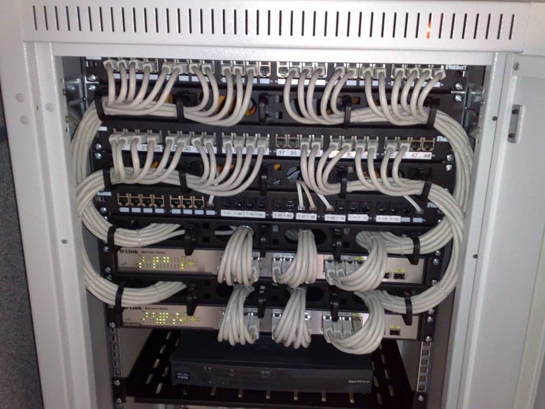
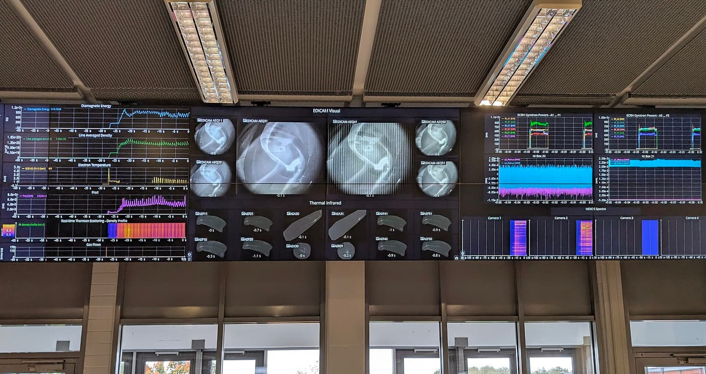
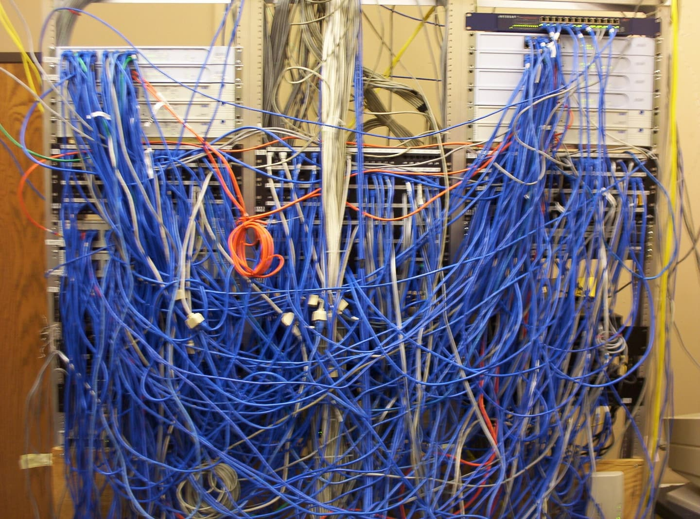

Introduction: a world where npm install doesn't work
Most writing about test automation rests on an assumption nobody bothers to state: that the test machine has internet access. That it will pull an image from Docker Hub, download browsers, ship results to a SaaS dashboard, and render its report with fonts from a CDN. Entire toolchains - from actions/checkout through Sentry, BrowserStack and Datadog - are built around that assumption.
Then you land in a bank, a hospital, a manufacturing plant, a public institution, or a carrier's segregated network. The segment your application runs in has no route to the internet. Not "a proxy with filtering" - no route. Outbound traffic is blocked at the firewall, and any exception needs a request, a justification, and a security sign-off that will take six weeks.
That is a closed environment. And increasingly, it is where the same test pipeline that takes three minutes on a developer's laptop has to work.
This article is about what breaks there, why, and how to arrange things so it doesn't.
1What a "closed environment" actually is

It's worth separating a few levels of isolation, because the consequences for testing differ sharply.
| Level | Characteristics | Consequence for testing |
|---|---|---|
| Restricted egress | Internet exists, but through a proxy with a domain allowlist | Survivable; the pain is MITM certificates and the exception list |
| Offline / dark site | No outbound traffic; an internal network with mirrors | Everything must come from the internal registry; no SaaS |
| Air-gapped | Physically disconnected; transfer by media or data diode | Artifacts arrive as a package, reports leave as a package |
| Classified / regulated | As above, plus audit requirements, validation, evidence retention | The report is legal evidence, not a curiosity for developers |
There's also a variant that gets little attention yet is the most common in commercial practice: the customer's environment, which you have no access to. The application runs at their site, they operate it, you ship versions. Your tests have to run on a machine you will never see, and the only feedback channel is a report somebody may send you - or may not.
The common denominator across all of these is this:
You cannot assume anything will "just download". You cannot assume you'll watch results live. You cannot assume you'll have a shell on the machine where it went wrong.
Everything that follows is a consequence of those three sentences.
2Why a standard pipeline falls apart at the first step
Take a perfectly ordinary CI file and count the hidden network dependencies.
# Looks harmless. Has seven dependencies on the internet.
test:
image: mcr.microsoft.com/playwright:v1.47.0-jammy # 1. image registry
before_script:
- npm ci # 2. registry.npmjs.org
- npx playwright install --with-deps # 3. browser CDN
# 4. apt / system repos
script:
- npx playwright test # 5. tests hit external APIs
after_script:
- npx codecov # 6. coverage upload to SaaS
- curl -X POST $SLACK_WEBHOOK ... # 7. notificationIn a closed environment, what survives is: nothing. The pipeline never even reaches the point where it could fail on the merits - it dies pulling the image.
And here is the first mental trap. Teams try to patch this piecemeal: "let's add a firewall exception for npm." Then for the browser CDN. Then for apt. Six months later you have thirty exceptions, nobody remembers what half of them are for, the security team is unhappy, and the pipeline breaks anyway because Playwright changed its download host in a minor release.
The right approach is the opposite: treat the absence of a network as a design requirement, not as a failure to work around.
3Running tests across different environments
3.1Separate "what you test" from "where you test"
The most common architectural mistake in suites that will later ship to a customer: addresses, data and switches woven into the test code.
// bad - the test knows where it runs
test('login', async ({ page }) => {
await page.goto('https://staging.example.com/login');
await page.fill('#user', 'testuser@example.com');
await page.fill('#pass', 'Passw0rd!');
});A test like that runs in exactly one place. The portable version:
// playwright.config.ts - environment injected, not hard-coded
export default defineConfig({
use: {
baseURL: process.env.APP_BASE_URL,
// self-signed certs are an everyday fact of on-premise life
ignoreHTTPSErrors: process.env.ALLOW_SELF_SIGNED === '1',
trace: 'retain-on-failure',
video: 'retain-on-failure',
},
reporter: [
['list'],
['junit', { outputFile: 'reports/junit.xml' }],
['html', { outputFolder: 'reports/html', open: 'never' }],
],
});// the test reads an environment profile, not a hard-coded value
test('login', async ({ page }) => {
const user = env.credentials('standard'); // from the vault / profile file
await page.goto('/login');
await page.fill('#user', user.login);
await page.fill('#pass', user.password);
});The rule is simple: if you have to edit test code to run it in another environment, that suite is not fit for a closed environment. Configuration comes in through environment variables or a profile file, never through edited assertions.
3.2Environment profiles as a first-class artifact
A pattern that works in practice: a directory of profiles, one per environment, versioned alongside the tests - with no secrets inside.
env/
local.env APP_BASE_URL=http://localhost:8080
ci.env APP_BASE_URL=http://app:8080
staging.env APP_BASE_URL=https://stg.internal.corp
client-a.env APP_BASE_URL=https://vallus.client-a.local
ALLOW_SELF_SIGNED=1
SKIP_TAGS=@needs-smtp,@needs-ssoThat SKIP_TAGS isn't laziness, it's honesty. A closed customer installation may genuinely have no mail server and no external identity provider. A test that requires one should be explicitly skipped with a named reason, not left red under a shared understanding that "that one's always red." A red test everyone knows to ignore is the beginning of the end of trust in the whole suite.
test.skip(
({ }, testInfo) => skippedByEnv(testInfo, '@needs-smtp'),
'No SMTP server in the client-a profile - skipped deliberately'
);The reason for the skip must reach the report. An auditor reading the result a year from now needs to know what wasn't checked, and why.
3.3An environment matrix is not a browser matrix
In closed environments, far more varies than the rendering engine:
- application version - customer A is on 4.2, customer B is on 3.9 and won't upgrade before the end of the fiscal year;
- functional configuration - flags, modules, integrations on or off;
- data - 50 records at one site, 12 million at another;
- identity - local accounts, LDAP, Kerberos, smart cards;
- network - latency, transparent proxies, injected certificates;
- resources - a VM with 2 vCPUs where Chromium can barely breathe.
That last one is underrated and generates the most "unexplained" failures. The classic case: a container with the default 64 MB /dev/shm. Chromium crashes at random, tests look flaky, the team spends weeks hunting a race condition in application code - when all it takes is:
services:
runner:
shm_size: "2gb" # or ipc: host
deploy:
resources:
limits: { cpus: '8', memory: 32G }The general lesson: before you call a test unstable, check whether the environment has the resources to run it. A large share of "flakiness" in on-premise installations isn't a test problem at all - it's an undersized machine or missing shared memory.
3.4The container as the unit of shipping
In a closed environment the container image stops being a convenience and becomes the delivery format. Rules that hold up:
Build so the dependency layer stands alone. Copying manifests before the source and installing before COPY . . turns a rebuild of tens of seconds into one of a few seconds - and, more importantly offline, lets the dependency layer be built once and moved unchanged.
# manifests first - the dependency layer rarely changes
COPY package.json package-lock.json ./
RUN npm ci --omit=dev
# source afterwards - this layer changes on every commit
COPY . .Everything inside, nothing from outside. Browsers, system libraries, fonts (otherwise screenshots with non-ASCII characters come out looking like ciphertext), time zones, the customer's CA certificates.
A version without version control. The image must build where there is no git repository - because in closed environments code very often arrives as an archive. If your build calls git rev-parse HEAD to stamp a version, provide a fallback: a content hash, or a version injected as a build argument. Otherwise the delivery to a customer without git simply won't build.
ARG BUILD_VERSION=unknown
ENV APP_VERSION=${BUILD_VERSION}Transport. docker save / docker load over media, with a checksum and a signature. Plus a package manifest: what's inside, at which versions, who built it, when.
3.5An artifact mirror, not firewall exceptions
The mature end state: an internal Nexus/Artifactory (or even a directory on a file server) holding:
- npm / PyPI / Maven / crates mirrors,
- an image registry,
- browser binaries under
PLAYWRIGHT_BROWSERS_PATH, - system packages.
# offline-first: nothing leaves the network
export NPM_CONFIG_REGISTRY=https://nexus.internal/repository/npm-proxy/
export PLAYWRIGHT_BROWSERS_PATH=/opt/ms-playwright
export PLAYWRIGHT_SKIP_BROWSER_DOWNLOAD=1And one iron rule of hygiene: lockfiles are mandatory and committed. npm ci, not npm install. poetry.lock, Cargo.lock, requirements.txt with hashes. In a closed environment, installing without a lock isn't "might fail" - it's "will succeed with a different version than you tested, and nobody will find out."
Watch for a case that regularly catches teams out: a shared frontend vendored into two projects. Same code, two separate lockfiles - a security audit and a dependency bump must cover both, or you patch a CVE in one branch and ship the vulnerable one from the other.
4Reporting: the report is the only feedback channel

This is the sharpest difference from testing "on the internet." In a normal pipeline the report is a convenience - you can always log into the machine and look at the logs. In a closed environment the report is the entirety of the information you will get. If something isn't in it, it doesn't exist.
4.1The report must be self-contained
Non-negotiable: zero CDN references. No Google Fonts, no <script src> to an external host, no images from the network. A report opened on a machine without internet must look exactly as it does on yours.
A practical acceptance test for a report - do it once and stop worrying:
# 1. copy the report to a machine with no network (or cut yours off locally)
# 2. check whether anything tries to reach out
grep -rEo 'https?://[^"'"'"' )]+' reports/html/ | sort -uThe output should contain nothing but addresses of the application under test. Anything else is a broken report - at the customer's site it will render as bare HTML with no styling, and conclusions drawn from that view can be badly wrong.
4.2Two formats, two audiences
| Machine format | Human format | |
|---|---|---|
| Example | JUnit XML, JSON | HTML, Allure |
| Consumer | CI, dashboards, trend scripts | a person diagnosing a failure |
| Contains | result, duration, class/name, message | the same, plus screenshots, video, trace, console and network logs |
| Role | aggregation and quality gates | investigation |
You need both. JUnit XML is ugly, but everything understands it - it is the lingua franca of test reporting and the safest choice when you don't know what will read the result on the other side.
<testsuite name="checkout" tests="42" failures="1" errors="0" skipped="3" time="118.4">
<testcase classname="checkout.payment" name="declined card" time="4.12">
<failure message="expected 'Declined' but got 'System error'">
at tests/checkout/payment.spec.ts:88
</failure>
</testcase>
<testcase classname="checkout.email" name="confirmation email" time="0">
<skipped message="No SMTP in the client-a profile"/>
</testcase>
</testsuite>Note the skipped entry with a reason. That single line is what saves someone a day of investigation a year later.
4.3What a report from a closed environment MUST carry
Since you won't be logging into the machine, the report has to carry the execution context:
- Environment identity - profile name,
baseURL, application version, database/schema version, active feature flags. - Suite identity - test version (commit or content hash), runner version, browser versions.
- Execution conditions - date and time zone, worker count, machine resources, whether retries occurred.
- Evidence for every failure - screenshot, video, trace, network log, console log. Playwright's trace is the number one tool here: it lets you replay the run offline, frame by frame, without access to the environment where it went wrong.
- Explicit skips - with reasons, as above.
- History - is this a new regression, or has this test been failing for a while?
A report header that genuinely works:
Suite: regression-suite @ 8f3a21c
Runner: 1.12.0 Chromium 129.0.6668.29 / Firefox 130.0 / WebKit 18.0
Environment: client-a (https://app.client-a.local) · app 4.2.1 · schema 118
Machine: 8 vCPU / 32 GB / shm 2 GB · 4 workers
Started: 2026-08-26 21:14 CEST Duration: 11 min 42 s
Result: 412 passed · 3 failed · 7 skipped (no SMTP, no SSO)Four lines, and they answer 80% of the questions that would otherwise be asked over chat.
4.4Metrics worth tracking over time
A single result says little. The value is in the trend:
- flake rate - tests that pass only on retry; the best single indicator of suite health;
- execution time and its distribution - creeping growth signals a resource problem ahead;
- coverage of business paths, not just lines of code;
- regression lifetime - how many hours or days a red test stays red;
- skip count - if it grows, the suite is quietly ceasing to check anything.
In a closed environment you can't ship this to a SaaS. The solution is mundane and entirely sufficient: a local database of run history (SQLite is plenty) plus a directory of HTML reports. One practical note - that's thousands of small files, and browsing a report is latency-sensitive, so an SSD isn't a luxury.
4.5The report as evidence, not as information
In regulated sectors (medical, financial, energy, defence) a test report can be a document in the audit sense. That adds requirements engineering teams rarely think about:
- immutability and retention - archived, checksummed, kept for years;
- traceability - linking a test to a requirement (
REQ-1042), so specification coverage can be demonstrated; - completeness - it must be evident what was run, on what, and against which version;
- no PII - more on this below, because it is the most frequent violation in the whole picture.
The practical minimum: a signed and hashed report package.
tar czf report-$(date +%Y%m%d-%H%M).tgz reports/
sha256sum report-*.tgz > report.sha256
# optionally: gpg --detach-sign5Who else sees your tests? Test data sovereignty
This question usually gets asked too late - after the contract with a tool vendor is signed, when the customer's security team asks where traffic from the test machine goes. It is a first-order question, because the answer is: test results are among the most sensitive data a software organisation produces - it's just that nobody treats them that way, because "they're only tests."
5.1What a testing tool actually carries out of the building
Break a typical run artifact into pieces and look at what each part reveals:
| Element | What it discloses |
|---|---|
| Test names | Domain vocabulary, modules, unreleased features - effectively a slice of the roadmap |
| Screenshots and video | Pre-release UI, data in form fields, names and amounts on screen |
| Network logs / traces | A full map of the API: endpoints, headers, tokens, request and response shapes |
| Stack traces | Code structure, file paths, libraries in use and their versions |
| Environment and host names | The customer's internal network topology, naming conventions, addressing |
| Failure history | Where the product is weak and for how long - a ready-made target list |
| Durations and resources | Infrastructure profile, deployment scale |
Read that last row twice. Aggregated test failure history is the finest reconnaissance document imaginable - it says not only where the bugs are, but where the team can't fix them and which areas are chronically unstable. If exactly one artifact from your pipeline were to leak, that is the one that would do the most damage.
5.2The chain of recipients nobody thinks about
When a suite reports to an external service - a SaaS dashboard, a cloud browser farm, an error-monitoring system, an LLM-backed "self-healing" tool - the data doesn't go to "a tool." It goes into a chain:
- the tool vendor - whose support staff can usually see your runs, so they can help you;
- their cloud provider - another entity, in another jurisdiction;
- their subcontractors - analytics, ticket handling, sometimes outsourcing;
- their models - if the terms permit using data to "improve the service," your screenshots and test code become training material;
- the jurisdiction it all sits in - with the consequence that state authorities may compel access, regardless of where the disk physically lives.
None of these parties is malicious. The point is that none of them was a party to the contract you signed with your customer - and it is your customer's data you just passed along.
5.3The legal and contractual dimension
Three layers of obligation, usually breached unintentionally:
Personal data. If the test environment holds real or weakly anonymised data, and a report containing PII reaches an external service, that is a transfer of data for processing. It requires a legal basis, a processing agreement and - for transfers outside the EEA - a transfer mechanism. A screenshot with a visible account number is personal data exactly as much as a row in a database is.
The customer's trade secrets. Implementation contracts in finance, the public sector and healthcare almost always contain a clause forbidding the removal of any data or configuration information from the designated environment. A testing tool sending telemetry breaks it continuously and automatically - and you find out at the audit.
Sector regulation. NIS2, DORA, financial supervisory requirements, national cybersecurity law - all pull in the same direction: an obligation to inventory suppliers, assess third-party risk, and demonstrate where data is processed. Every external recipient of test data is an entry on that list you'll have to justify.
And the point that ends the discussion in most closed deployments: the customer simply forbids it. They don't negotiate. A tool that has to phone home doesn't clear their security gate, and that's that.
5.4The simple answer: data stays where it was produced
The model that holds up in a closed environment is austere:
- Zero telemetry. The tool sends no usage statistics, reports no errors to an external collector, checks for no updates.
- Zero call-home. No licence server that has to be reached. A licence is a file verified locally, not a network request - otherwise an air-gapped installation will stop working at a random moment with no way to fix it.
- Zero runtime dependency on external services. Reports, history, artifacts - all on the customer's disk, in a format that opens without the tool that produced it.
- Outbound traffic only to the application under test. That is the only permissible direction, and it can be verified objectively.
Verification is trivially simple and worth running against every tool you admit into a closed environment - including your own:
# what is this machine trying to reach, other than the app under test?
sudo tcpdump -n -i any 'tcp[tcpflags] & tcp-syn != 0 and not dst net 10.0.0.0/8' \
-w /tmp/egress.pcap
# run the full suite, then see who showed up
tcpdump -nr /tmp/egress.pcap | awk '{print $5}' | cut -d. -f1-4 | sort -uEmpty output is the only acceptable output. If anything appears, you have a concrete answer to "who else sees our tests" - with an IP address attached.
5.5Questions to ask a testing tool vendor
Before you let any tool into the pipeline - and especially into a customer's environment - it's worth having the answers in writing:
- Does the tool run fully offline, with no activation and no periodic licence check?
- What outbound connections does it initiate in normal operation? Can they be disabled entirely?
- Where are results, screenshots and traces physically stored? Who at the vendor can access them?
- Is the data used to train models or to "improve the service"?
- What is the retention period, and what does documented deletion look like?
- Is the report a self-contained file, or does it need the vendor's infrastructure to be read?
- What happens to your data - and to your ability to run tests - if the vendor disappears?
That last question matters most strategically. If the answer is "you lose access to the history and the tool stops working," you didn't buy a tool - you rented a dependency, and wrote it into the critical path of shipping software.
5.6The flip side: this works in your favour too
It's worth noting that "data stays put" is not merely a concession to a security department. It is an advantage:
- it shortens the sale - no third-party vendor assessment to pass, no data transfer to negotiate, because there is no transfer;
- it removes liability from you - you don't hold anyone else's data, so you can't lose or expose it;
- it behaves identically everywhere - an installation in a bank and one on a developer's laptop act the same, because neither depends on an external service being up;
- it survives time - an environment rebuilt from archive five years from now still works, because there's nobody who could switch the server off.
Let's state it as a design principle, because that is how it should be treated:
Test results belong to whoever produced them. Neither the tool vendor nor anyone else should have access to them - not because they're suspect, but because there is no reason for them to. Access that isn't needed is purely risk.
6What is genuinely hard today

The list below isn't theory - these are the things that routinely eat weeks of work.
6.1Flaky tests - a tax nobody puts on the books
A flaky test is worse than no test, because it actively destroys trust. Once a team learns that "red sometimes just happens," it stops reacting to real regressions too.
In closed environments the problem is sharper for two reasons: the machines are usually weaker, and you can't look at what happened.
Causes, in order of frequency:
- Waiting on time instead of state -
waitForTimeoutinstead of asserting on a condition. - Insufficient resources -
/dev/shm, CPU starvation, starved workers. - Shared state between tests - the same user, the same record.
- Order dependence - test B only works after test A.
- Time and time zones - the test passes until 22:00 CEST, then fails because in UTC it's tomorrow.
Retries are acceptable as a shock absorber, but on one condition: a retry must be visible in the report and counted as debt. A retry that quietly paints the result green is a mechanism for hiding regressions.
6.2Environment drift - "works on my machine" at enterprise scale
The classic: dev on macOS/ARM, CI on x86 Ubuntu, the customer on RHEL with their own CA and a transparent proxy. Tests pass in the first two, fail in the third, and the diagnosis takes a week because the third can't be reproduced.
Countermeasures, cheapest first:
- the container as the only way to run tests in CI and at the customer's site (locally, native runs are fine for a fast feedback loop);
- pinned versions of everything - base image, browsers, dependencies;
- an environment smoke test before the suite proper: does the application respond, does the certificate validate, is the time zone what you expect, is there free disk space. Thirty seconds that turn "48 strange failures" into one readable message: "the environment does not meet the preconditions."
6.3Test data: the biggest real legal problem
There is no good way to test business paths without credible data, and the most credible data is production data - which you are not allowed to use.
Three bad practices show up consistently: a copy of production on staging "just for a moment," a screenshot with a real national ID number attached to a report, and customer data flowing to an external analytics service alongside test telemetry.
What works:
- Synthetic data from a generator, deterministically seeded - repeatable and safe (
fakerwith a fixed seed, your own domain factories). - Shape-preserving anonymisation - pseudonymisation that keeps distributions and relationships, not random noise, because noise won't exercise the same code paths.
- Masking in reports - fields marked sensitive stripped from screenshots and logs before the artifact is written.
- The base rule: never assume a report will stay inside the closed environment. Reports travel by email. Assume it will get out - and make sure there's nothing in it that needs protecting.
6.4Secrets
A closed installation has no cloud secret manager. The reality is often bleak: passwords in a .env file in the repository, or in a Jira ticket description.
The minimum that can be deployed anywhere: secrets injected at runtime (environment variables, a file outside the repository with restricted permissions, a local Vault if the customer runs one), separate service accounts per environment, and a masking filter in the logger and the reporter - so a secret's value physically cannot reach an artifact, even when someone logs it by mistake.
6.5Integrations that don't exist in the test environment
A payment gateway, a tax system, an external IdP, a signing service, an SMS provider. In a closed environment these are often absent entirely, or there's a single shared sandbox that three teams fight over.
The answer is layering, not picking one technique:
- contract testing - verifies interface compatibility without calling the real service; the only technique that genuinely protects against API drift when you have no integration environment;
- locally-run doubles (WireMock, MSW, your own stub in a container) - deterministic, fast, and able to cover error scenarios the real service won't reproduce on demand;
- a narrow set of tests against the real integration, run rarely and tagged - deliberately skipped where the integration doesn't exist.
The trap: a double that gradually stops matching reality gives you a falsely green column. The contract has to be verified on the provider's side too, otherwise you're testing your own idea of someone else's API.
6.6Supply chain and CVEs without internet
Vulnerability scanning assumes access to a CVE database. Offline means periodically loading that database in (Trivy and Grype can work from a local cache), maintaining an SBOM for every released version, and signing artifacts.
This is an area that tends to be neglected in closed environments precisely because "there's no internet, so there's no threat." The vector is the media and the delivery package, and the absence of a network only means you won't hear about the vulnerability automatically.
6.7A feedback loop measured in days
In a normal project: commit → 10 minutes → result. In a closed-delivery model: commit → package → transfer → maintenance window → execution at the customer's site → report sent back → analysis. Three days if it goes well.
The key consequence: the further from the developer, the more expensive the failure - so the more must be caught earlier. A distribution of effort that holds up:
locally (seconds) unit tests + static analysis + contract linting
CI (minutes) container integration tests + contract tests + critical E2E
staging (hours) full regression + performance + version compatibility
customer (rarely) smoke + acceptance + configuration-specific testsThe suite that runs at the customer's site should be small, fast and absolutely stable. One flaky test in a customer acceptance suite costs more reputation than a hundred flakes in CI.
6.8Maintenance: test suites rot too
Less discussed, and very real: the cost of maintaining a suite grows faster than the cost of writing it. Selectors drift after a UI refactor, assertions accumulate exceptions, and after two years nobody knows whether a test verifies a business requirement or an incidental implementation from three versions ago.
Hygiene that works: selectors based on roles and dedicated test attributes rather than DOM structure; page and component objects instead of copy-pasted steps; test names that describe the business rule rather than the clicks; and a periodic review of skipped and long-red tests with a decision attached - fix it or delete it. A test nobody has fixed in six months protects nothing; it only generates noise.
6.9AI tooling and the absence of a network
A new problem of recent years, worth its own mention. LLM-backed tools - test generation, self-healing selectors, failure root-cause analysis - send code and screenshots to an external service by default. In a closed environment that is simply out of the question, and not by "policy" but by absence of a route.
The sober approach: apply AI assistance on the development side, where the network exists, and to code rather than to customer data. The runtime at the customer's site stays deterministic and offline. A suite that needs a cloud model call to function is not a suite you can deliver to a bank.
7A practical checklist
A suite is ready for a closed environment if:
Portability
- it runs with no outbound traffic other than to the application under test
- all addresses and data enter through configuration, not through code
- it runs on an image built from the internal mirror, with pinned versions
- it builds without version control (version falls back to a content hash)
- lockfiles are committed; with shared code - all of them, not one
Execution
- an environment smoke test runs before the suite proper
- skips are explicit, tagged and justified
- resources verified (CPU, RAM,
/dev/shm, disk) - no dependencies between tests and no dependence on execution order
Reporting
- fully offline HTML report - zero CDN references
- a machine format alongside it (JUnit XML)
- a header with environment identity, application version and suite version
- evidence attached to every failure (screenshot, video, trace, logs)
- retries visible, not hidden
- no PII and no secrets in artifacts
- run history stored locally
Data sovereignty
- verified absence of outbound traffic beyond the app under test (
tcpdump/firewall log) - no telemetry, no call-home, no external licence verification
- results, screenshots and traces remain on the customer's infrastructure
- the report opens without the vendor's infrastructure
- tool vendors in the pipeline inventoried and justified
Delivery
- a package with a checksum and a content manifest
- an SBOM and a vulnerability scan from a local CVE database
- run instructions that assume no internet and no live support from you
8Conclusion
Testing in closed environments is not a separate discipline. It is testing without the conveniences that mask a weak craft. Everything that can be patched by hand in a connected world - pulling a missing dependency, logging into the machine, glancing at a dashboard - has to be anticipated in advance here and packed into an artifact.
Four principles the rest reduces to:
- Hermeticity. The suite carries everything it needs. If it has to download something, it isn't ready.
- A self-describing report. Assume you will never see the machine where it went wrong. The report should carry the answer, not an invitation to ask questions.
- Honesty about the result. Explicit skips, visible retries, recorded reasons. Green achieved by hiding facts is worse than red.
- Data sovereignty. Results, screenshots and logs stay with whoever produced them. No tool vendor has a reason to see them - and every one that does is a risk you'll eventually have to explain to an auditor.
The good news is that the work required to meet these requirements pays off where the internet does exist, too. A hermetic, deterministic suite with a decent report is simply a good suite - a closed environment merely removes the option of not building one.
Download the offline copyOne HTML file with everything inside - opens with no internet at all.